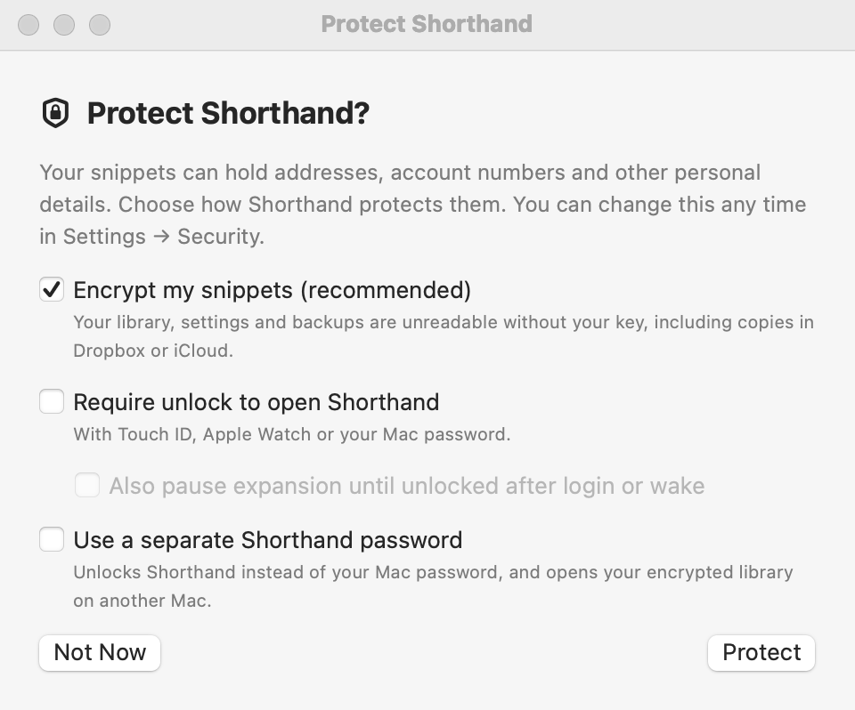
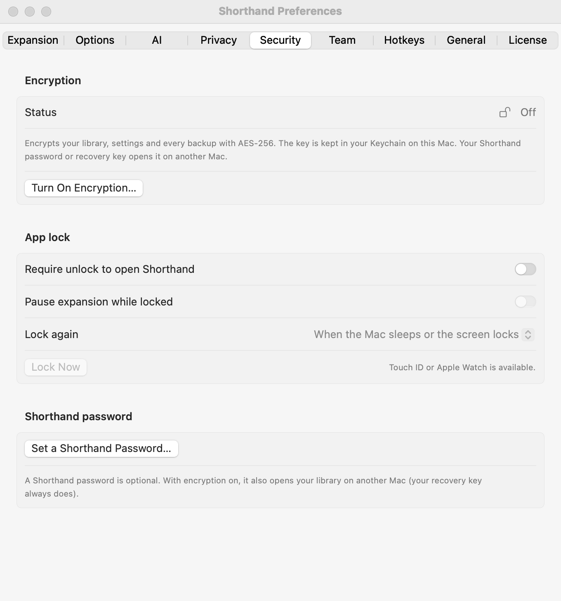
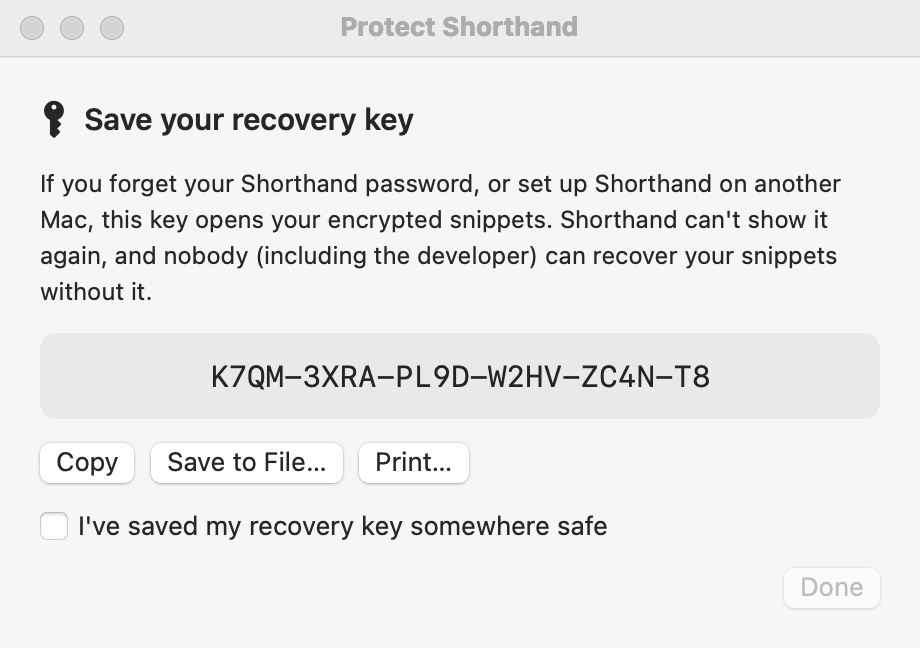
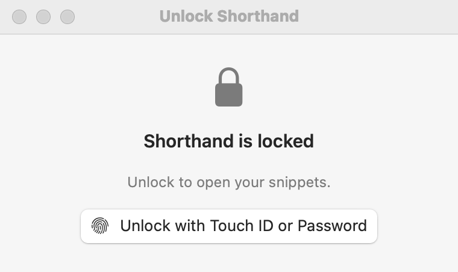

Security & Encryption
Your snippets can hold addresses, account numbers, and other personal details. Shorthand Expander™ can encrypt them on disk, and can lock its windows until you unlock with Touch ID or a password. Both are optional and both are off until you turn them on.
What’s protected
There are two separate features. Encryption scrambles the app’s files, so a copy of them is useless without your key. The app lock keeps someone at your Mac out of its windows. You can use either one, or both.
| What | With encryption on | With the app lock on |
|---|---|---|
| Snippet library, including the copy in your sync folder (Dropbox, iCloud Drive…) | Encrypted | The windows that show it need unlocking |
| Settings and statistics | Encrypted | Settings needs unlocking |
| Every backup | Encrypted | — |
| Snippet names in the menu bar menu | — | Hidden while locked |
| Expansion as you type | Works as usual | Works as usual, unless you turn on Pause expansion while locked |
Security.json (lock settings and locked copies of your key) | Not encrypted; it holds no secrets | — |
| Diagnostics log (permission status only) | Not encrypted; it never contains your typing or snippets | — |
| AI keys | Always kept in your Keychain, never in the app’s files | |
What it can’t do
- While Shorthand Expander is unlocked, snippets are readable. They have to be, so the app can expand them. Anything already running on your Mac as you (for example, malicious software you installed by mistake) could read them while the app is open. Encryption protects copies of your files, not a Mac that has already been taken over.
- A stolen Mac that’s switched off is already protected by FileVault, macOS’s whole-disk encryption, if it’s on. Check in System Settings ▸ Privacy & Security ▸ FileVault.
- The app lock isn’t encryption. It stops someone using the app’s windows at your desk. It doesn’t change the files on disk.
Where encryption helps most: copies of your library in a sync folder or on a cloud service, backups you copy elsewhere, and anyone browsing your files.
The “Protect Shorthand?” offer

Shorthand Expander shows this window once: right after you finish the setup window, or the first time you open the app after updating to 1.4. It offers four choices:
- Encrypt my snippets (recommended)
- On to start with. Encrypts your library, settings, and backups, including copies in Dropbox, or iCloud. See Turning on encryption.
- Require unlock to open Shorthand
- Turns on the app lock, unlocked with Touch ID, Apple Watch, or your Mac password.
- Also pause expansion until unlocked after login or wake
- Only available with the lock on. Snippets don’t expand until you unlock.
- Use a separate Shorthand password
- Type a password of 8 or more characters twice. It unlocks Shorthand Expander instead of your Mac password, and opens your encrypted library on another Mac. See Shorthand password.
Click Protect to apply your choices. If you chose encryption, the recovery key screen comes next, and nothing is encrypted until you’ve saved the key and clicked Done. Click Not Now to skip; the offer isn’t shown again.
Turning on encryption

- Open Settings ▸ Security and click Turn On Encryption….
- If you already use the app lock or a Shorthand password, confirm it’s you with Touch ID or your password.
- If you have a Shorthand password, Shorthand Expander asks for it so it can open your encrypted library too. Type it in both boxes and click Save.
- The Save your recovery key screen appears. Keep the key safe: see below.
- Turn on I’ve saved my recovery key somewhere safe, then click Done.
Shorthand Expander then encrypts your library (wherever it is, including a sync folder), your settings, your statistics, and every backup in the Backups folder. The status changes to On, and Settings shows Encryption is on.
- The app uses AES-256, a standard, strong form of encryption.
- The key is kept in your Keychain on this Mac, so on this Mac the app opens your files by itself. You don’t type a password every time.
- macOS may ask once whether Shorthand Expander can use its Keychain item. Click Always Allow. See Keychain prompts.
Older versions of Shorthand Expander can’t read an encrypted library. If you sync between Macs, update it on every Mac before turning encryption on.
The recovery key

The recovery key is a code of 26 letters and numbers in groups of four, such as K7QM-3XRA-…. It opens your encrypted snippets if you forget your Shorthand password, or when you set up Shorthand Expander on another Mac. When you type it, capitals, spaces, and dashes don’t matter.
Use one of the buttons to keep it:
- Copy: copies the key so you can paste it into your password manager.
- Save to File…: saves a text file named Shorthand Recovery Key.txt. Keep it somewhere other than this Mac, such as a USB drive.
- Print…: prints it on paper.
Shorthand Expander can’t show the recovery key again. Nobody, including the developer, can recover your snippets without your recovery key or your Shorthand password.
Making a new recovery key
If you lose the key, or think someone else has seen it, make a new one while this Mac can still open your snippets:
- In Settings ▸ Security, click New Recovery Key… and confirm it’s you.
- Save the new key the same way, select the checkbox, and click Done.
Keep the new key. Your files from now on carry it, and other Macs that share your sync folder pick it up automatically. Backups and synced copies saved before the change can still be opened with the old key, so it isn’t a way to lock out someone who already has the old key and an old copy.
Shorthand password
A Shorthand password is optional. Without one, Shorthand Expander unlocks with Touch ID, Apple Watch, or your Mac password, and your recovery key opens your library on another Mac. With one:
- With encryption on, it also opens your library on another Mac (your recovery key always does).
- You can choose to unlock the app with it instead of your Mac password.
To set, change, or remove it
- In Settings ▸ Security, under Shorthand password, click Set a Shorthand Password….
- Type it in New password and Confirm new password. It must be at least 8 characters. Click Save.
Once a password is set, the same section shows Change Password… (which asks for your Current password first) and Remove Password….
Turn on Unlock with Touch ID or my Shorthand password (not my Mac password) if someone else knows your Mac password, or uses your Mac. Shorthand Expander then unlocks only with Touch ID (or Apple Watch) or your Shorthand password.
Shorthand Expander can’t recover a forgotten password, so keep your recovery key too. Changing security settings, such as the password or the lock, asks you to confirm it’s you first.
App lock

Turn on Require unlock to open Shorthand in Settings ▸ Security ▸ App lock. When Shorthand Expander is locked and you open one of its windows, the Unlock Shorthand window appears. Click Unlock with Touch ID or Password and use Touch ID, your Apple Watch, or your Mac password. (Without Touch ID, the button says Unlock with Mac Password. If you chose to unlock with your Shorthand password, type it and click Unlock.)
What’s locked
- The main window, Settings, the setup and import window, Create Snippet, Statistics and the tag manager. When Shorthand Expander locks, any of these that are open close.
- The search panel (Search Snippets… and its hotkey).
- The menu bar menu hides your groups and snippet names, and shows 🔒 Shorthand is locked — Unlock… instead.
Help stays open, so you can read this page while Shorthand Expander is locked.
Snippets keep expanding while Shorthand Expander is locked. To stop that too, turn on Pause expansion while locked: until you unlock, your typing passes straight through and nothing is remembered.
When it locks again
Shorthand Expander is locked each time it starts. After you unlock, it locks again according to Lock again:
- When the Mac sleeps or the screen locks (the default)
- After 5 minutes idle (and on sleep/lock)
- After 15 minutes idle (and on sleep/lock)
- After 1 hour idle (and on sleep/lock)
- Only when Shorthand quits
“Idle” means you haven’t used the keyboard, mouse, or trackpad for that long.
To lock straight away, click Lock Now in Settings, or choose Lock Shorthand from the menu bar icon’s menu.
At login
When Shorthand Expander starts locked, for example at login, it doesn’t pop up a password prompt. If Pause expansion while locked is on, a bubble reminds you: Shorthand is locked. Snippets expand after you unlock. Click Unlock… in it, or choose 🔒 Shorthand is locked — Unlock… from the menu bar icon.
Syncing between Macs
With encryption on, the copy of your library in your sync folder is encrypted, so Dropbox, iCloud, or anyone else who sees that folder can’t read it.
The key itself stays in this Mac’s Keychain. Shorthand Expander can’t yet sync it through iCloud Keychain, so each other Mac needs your Shorthand password or recovery key once:
- On the other Mac, open Settings ▸ General, click Use Sync Folder… and choose the shared folder, as described in Sync.
- Shorthand Expander says This library is encrypted. Type your Shorthand password or recovery key and click Unlock.
- Choose Use Library in Folder as usual.
That Mac keeps the key in its own Keychain from then on, so it opens the library by itself. Its own settings, statistics, and backups are encrypted with the same key. If the password or key is wrong, Shorthand Expander says That password or recovery key didn’t open the library. and nothing is changed.
If another Mac turns on encryption (or starts again with a new key) while this Mac is already syncing, a bubble says Your synced library was encrypted on another Mac. Unlock it with your Shorthand password or recovery key. Click Unlock… and type either one. Until you do, this Mac doesn’t save the library and snippets don’t expand, so nothing is overwritten.
Turning encryption off
- In Settings ▸ Security, click Turn Off Encryption… and confirm it’s you.
- Shorthand Expander asks Turn off encryption? Your library, settings, and backups will be saved as plain files again, including any synced copy. Click Turn Off.
If Shorthand Expander can’t write the plain files (for example, the sync folder isn’t available), it leaves encryption on and tells you; nothing is lost. It keeps the old key in your Keychain, so older encrypted backups (and copies from another Mac) still open.
Your Shorthand password, if you have one, stays set for the app lock. If you sync, turn encryption off on every Mac that shares the folder; a Mac that still has it on encrypts the library again the next time it saves.
Forgot your password?
- Wherever Shorthand Expander asks for your Shorthand password, you can type your recovery key instead, even if the box only says Shorthand password.
- On a Mac where Shorthand Expander still opens normally, your snippets are fine, because the key is in this Mac’s Keychain. Click Remove Password… in Settings ▸ Security (confirm with Touch ID, your Mac password, or your recovery key), then Set a Shorthand Password… to choose a new one.
- Lost your recovery key too? If this Mac still opens Shorthand Expander, click New Recovery Key… now and save the new key.
If you have neither your password nor your recovery key, and no Mac that still opens Shorthand Expander, your encrypted files can’t be opened by anyone. Turning on encryption also encrypts every backup in the app’s Backups folder, so those are encrypted too. Only a copy you made elsewhere before turning encryption on (an exported group, or an older Time Machine backup, for example) would still be readable.
Restoring an older encrypted backup
Restore an encrypted backup the usual way: Settings ▸ General ▸ Restore… (see To restore a backup). Backups made with your current key open without any questions.
A backup made with an earlier key asks: This backup was encrypted with an earlier key. Type the Shorthand password or recovery key that was in use when it was made, and click Unlock. If neither opens it, Shorthand Expander says That backup couldn’t be opened. and your library isn’t changed.